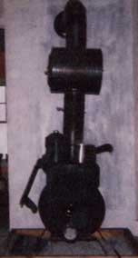

A reader reports on the varied pleasures that can result from...
As an interim step between the hectic pace of apartment life and owning our own farmland, my husband and I moved into a small rural rental house. The home and its three surrounding acres have provided us with welcome relief from the parking dilemma, the neighbor's stereo, and other city hassles . . . but it soon became obvious that the old, uninsulated dwelling was a veritable wind tunnel.
With the blizzards of '78 in our home state (Ohio) still fresh in our memory, we decided to supplement the building's oil-burning furnace with a woodstove. (What better way to get some practice for using such a heater on our future homestead?) And, in order to conserve dollars for the acreage we still hope to buy for ourselves, we chose MOTHER's woodburning stove as our first project. Joe dusted off his old welding talents-acquired in his days as a member of the Future Farmers of America-and soon he had created "Pig", as we nicknamed the homemade unit.
PROFITABLE SPINOFFS
We did run into a few minor problems, such as a scarcity of old electric water heaters . . . and ended up spending $18 for a nondescript tank from a local salvage yard. Spinoffs from the stove's construction, however, amounted to some fine barters. For example, while Joe was working part time for a nearby farmer, his boss was kind enough to let us borrow a welding outfit . . . and when "Pig" was finished, the job Joe had done was impressive enough to land him two months' worth of millwright and welding jobs during the fall.
Not to be outdone, I went to a local construction company for gravel to fill the wooden box at the stove's base. I took along MOTHER NO. 49 and used pictures of the woodburner to explain what I wanted. The construction company owner was so enthusiastic about the stove's plans that he swapped me the gravel for MOTHER's address . . . and had two workmen sack and load it for me, free of charge!
A LITTLE INNOVATION
"Pig" fit perfectly into our dining room decor and comfortably lifted the chill of fall mornings. The warmth alone might have satisfied most people, but I couldn't forget MOTHER's "you can even cook on it" claim, and went right to work exploring the stove's culinary uses.
I soon found that the appliance's 3/8"-thick top required a long heating-up period . . . in fact, the dining room was so warm by the time lunch was ready that we were forced to retreat to the living room to eat! In below-zero weather, this problem became less serious of course, but-before resigning myself to using the electric range in all but the dead of win ter-I was determined to try a minor modification.
We made another trip to the salvage yard and bought a piece of 1/8" sheet steel the same size as Pig's loading door. Joe fine-trimmed this extra "lid" to fit just right . . . added a handle . . . and our "cooktop" was in business.
With the thicker top turned back, the thinner plate does just what we'd hoped. It warms up rapidly and reaches "frying temperature" without superheating the whole house. It's also capable of several very convenient tricks. We can, for example, slide the plate (which rests at a slight incline on the loading box frame) back toward the stovepipe to open a crack at the front of the loading hole for additional air intake. Admittedly, doing so cuts down considerably on the stove's efficiency, since "Pig" is then no longer airtight, but the extra oxygen makes for a really fast blaze to speed up the early morning coffee.
Turned sideways, the cooktop allows space to insert a popcorn popper or a grill . . . and still keep the smoke headed up the chimney where it belongs. In fact, the ventilation is so good that you don't even get a chance to smell those T-bones cooking!
ADD AN OVEN
The cooktop was the first enjoyable addition to our woodburner . . . a "Sootless Sue Drum Oven" from Cumberland General Store (Dept. TMEN, Route 3, Box 479, Crossville, Tennessee 38555 . . . Cat alog No. 1640 . . . $47.95) was another. Despite warnings from woodstove retailers that our little heater would never bring the oven up to a usable temperature, I stubbornly pursued my plan. We installed the unit above a stovepipe damper, and we've found that it's nearly always ready for some type of cooking. A banked fire will provide low heat for slow-roasting peanuts, while the blaze left from finishing a meal on the cooktop will have the oven hot and ready to receive a pan of biscuits.
The stove's air intake, the damper, and the choice of two cooktops make baking control fairly easy. However, the oven's volume is small, and the temperature inside can change rapidly. Therefore, I've found it best to stay snuggled up to the stove with mending or reading when any delicate treat, such as a cake or meringue, is in progress.
"Sootless Sue" turned out a number of good pies, baked potatoes, meat loaves, and the like over the winter . . . and resulted in surprisingly few disasters, considering how new I was at the art of cooking with wood. We did notice that installing the little oven cut down on the draft to a small degree, but that reduction of airflow causes trouble only on those days when the stove's draw is particularly sluggish anyway.
Overall, we're convinced that the oven really contributes to the heat exchange-as well as the cooking capacity-of our stove. And when it's not being used for baking, we leave the door open to enhance this contribution. So far, creosote buildup hasn't appeared to be a problem ... perhaps because the oven, as its trade name implies, incorporates a soot-removing device. (Then, too, we've been lucky enough to have access to cured hardwood fuel . . . mostly hickory and oak treetops-logging leftovers-that we barter our cutting labor for.)
A REAL JOY
It probably sounds as though cooking has been the stove's main function . . . and maybe we have given more thought to our stomachs than to our heating bill. But-while many friends and relatives hereabouts require regular 100-and 150-gallon fillups to heat their insulated homes-the oil man visited us only twice during the past winter, adding just 6 gallons to our fuel tank one time and 26 gallons on the second occasion.
Needless to say, life with MOTHER's little woodburner has been a real joy . . . even if we did go $18 over MOTHER's $35 proposed budget. The homey stove has heated our house, dried soggy boots and mittens, cooked rib-sticking meals, and crackled cheerfully. Not bad for our first homestead project!
EDITOR'S NOTE: To order the plans for MOTHER's Amazing Woodburning Stove, send $10 to: Mother's Plans, P.O. Box A, East Flat Rock, North Carolina 28726.
|
 Mom's woodburner turned cookstove. |
|
|